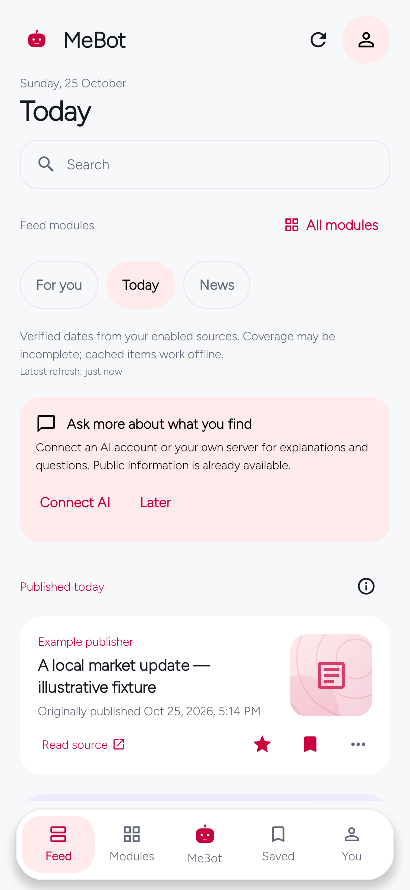
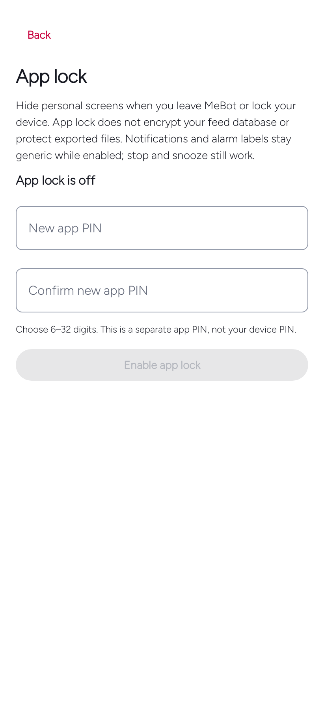

Android candidate · 0.9.0
A faster local engine. A focused Today.
The familiar MeBot interface, with measured ranking work, daily source evidence and optional app lock.
953 local tests, lint without errors and unsigned production assembly passed. Signing custody, remote review and physical-device acceptance remain pending. The official download is still 0.8.2. Do not uninstall your current app for an unsigned or incompatible file.
Native candidate previews
Host-rendered Android screens with synthetic content, not physical-device or live-account evidence. The Today image is the real Activity shell with working star, bookmark and five-tab navigation.





Capture method and remaining device checks · Kiswahili empty Today · Locked screen


Today, without relabeling yesterday
Today gathers verified current-day items from enabled sources, preserving the original stories, modules and notes. Publisher publication, forecast validity and source-backed event dates are distinct. Unknown or stale dates remain in the regular feed. Your chosen timezone—not a rolling 24-hour window—sets the day.
Opening Today and showing more cached items makes no extra AI request. Existing source HTML retrieval also checks publication metadata, even without an image; it does not add requests to fill the view. AI-generated dates cannot verify themselves.
Measured, not assumed
On the shared host JVM, a synthetic dense 250-item Kotlin ranking fixture improved from 21.549 ms to 5.100 ms at p95 in the final-source repeat. Three independent forks supplied 1,200 observations per scenario. Small fixtures had mixed results; the old scoring path is retained for short editions.
These are ranking measurements, not phone startup, scrolling, battery or provider-speed claims. Raw results and method are in the source benchmark report. Storage measurements did not justify a risky rewrite.
Optional protection, clear boundaries
Choose your own separate app PIN, then optionally enable supported strong biometrics. MeBot locks when leaving the foreground or when the screen turns off, and checks the device lock on resume. Alarm stop and snooze remain available with generic protected labels.
App lock gates the interface; it does not encrypt the feed database or exported backups. No device PIN is requested. Security state is excluded from imports and backups; there is no silent forgotten-PIN bypass or automatic wipe after failed attempts.
Interests stay yours
Compact equal-width icon tiles preserve the earlier onboarding design. Search, category filters and more topics stay available, with optional custom text after the chooser. Custom text reuses the existing module-scoped note, so an empty revisit does not erase your saved interests. Global About you and module context notes retain their separate roles.
Existing optional local reading history can be disabled or cleared in Your data. No new telemetry, private connector or dwell tracking is added.
What still needs a real phone
Biometric hardware and enrollment changes, PIN tuning, lock-screen and recents behavior, native PDF decoding, live video streaming, phone performance and signed upgrade installation remain device acceptance checks. Host renders and passing builds do not establish those outcomes.